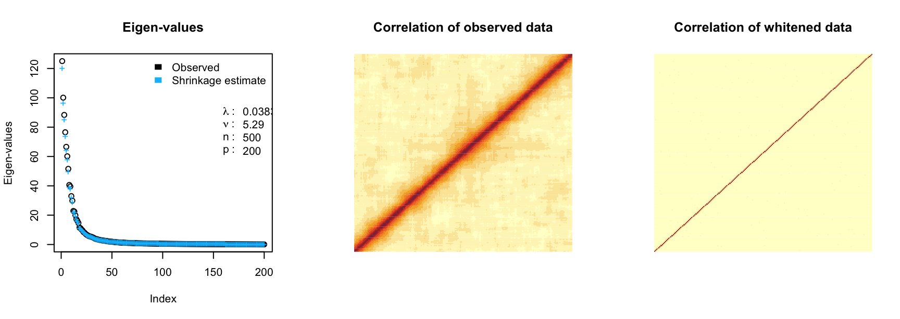

Fast Probabilistic Whitening Transformation for Ultra-High Dimensional Data
Developed by Gabriel Hoffman
Run on 2021-12-09 14:35:20
Source:vignettes/decorrelate.Rmd
decorrelate.RmdData whitening is a widely used preprocessing step to remove correlation structure since statistical models often assume independence (Kessy, et al. 2017). The typical procedures transforms the observed data by an inverse square root of the sample correlation matrix (Figure 1). For low dimension data (i.e. \(n > p\)), this transformation produces transformed data with an identity sample covariance matrix. This procedure assumes either that the true covariance matrix is know, or is well estimated by the sample covariance matrix. Yet the use of the sample covariance matrix for this transformation can be problematic since 1) the complexity is \(\mathcal{O}(p^3)\) and 2) it is not applicable to the high dimensional (i.e. \(n \ll p\)) case since the sample covariance matrix is no longer full rank.
Here we use a probabilistic model of the observed data to apply a whitening transformation. Our Gaussian Inverse Wishart Empirical Bayes (GIW-EB) 1) model substantially reduces computational complexity, and 2) regularizes the eigen-values of the sample covariance matrix to improve out-of-sample performance.

Figure 1: Intuition for data whitening transformation. A) Original data, B) Data rotated along principal components, C) Data rotated and scaled, D) Data rotated, scaled and rotated back to original axes.
Basic usage
library(decorrelate)
library(mvtnorm)
n = 200 # number of samples
p = 500 # number of features
# create correlation matrix
Sigma = autocorr.mat(p, 0.9)
# draw data from correlation matrix Sigma
Y = rmvnorm(n, rep(0, p), sigma = Sigma * 5.1)
rownames(Y) = paste0("sample_", 1:n)
colnames(Y) = paste0("gene_", 1:p)
# eclairs decomposition implements GIW-EB method
ecl = eclairs(Y)
# decorrelate data using eclairs decomposition
Y_whitened = decorrelate(Y, ecl)
# the same whitening can be performed with one command where the eigen-value
# shrinkage is performed internally
Y_whitened2 = whiten(Y)Here plot A) the eigen-values of the covariance matrix before and after shrinkage. B) The correlation of the observed and C) whitened data.
par(mfrow = c(1, 3))
# plot shrinkage of eigen-values
plot(ecl)
# correlation between variables in observed data
image(cor(Y), axes = FALSE, main = "Correlation of observed data")
# decorrelate data using eclairs decomposition
image(cor(Y_whitened), axes = FALSE, main = "Correlation of whitened data")
Advanced usage
The decorrelate package has advanced features to examing details of the whitening transformation.
Directly compute whitening matrix
While eclairs(), decorrelate(), and whiten() perform the probabilistic whitening transformation efficiently without directly computing the whitening matrix, getWhiteningMatrix() can directly compute the matrix.
# compute whitening matrix from eclairs decomposition
W = getWhiteningMatrix(ecl)
# transform observed data using whitening matrix
Z = tcrossprod(Y, W)
# evalute difference between whitened computed 2 ways
max(abs(Z - Y_whitened))## [1] 1.265654e-14The difference between function is due only to machine precision.
Explicit covariance or correlation matrix
The full covariance for correlation matrix implied by the eclairs() decomposition can be computed explicitly. Note that computing and storing these matries is \(O(p^2)\), it may not feasable for large datasets.
Sample from multivariate normal
The form of the eclairs() decomposition can be used to efficiently sample from a multivariage normal distribution with specified covariance.
# draw from multivariate normal
n = 1000
mu = rep(0, ncol(Y))
# using eclairs decomposition
X.draw1 = rmvnorm_eclairs(n, mu, ecl)Low-rank models
A low rank eclairs() decomposition can be computed more efficiently when \(k\) is small relative to \(min(n,p)\). Importantly, the emprical Bayes estimate of the shrinkage parameter \(\lambda\) can still be computed accurately for sufficiently large \(k\). Note that the low rank method trades computational efficientcy for accuracy in the whitening transform.
# use low rank decomposition with 50 components
ecl = eclairs(Y, k = 60)
# decorrelate data using eclairs decomposition
Y_whitened = decorrelate(Y, ecl)
In this case, the low rank whitening produces transformed features that are approximately independent. The approximation improves as the rank increases.
Removing correlation vs covariance
By default eclairs() computes the covariance between columns, but the correlation can be computed using compute = 'correlation'.
library(clusterGeneration)
# generate covariance matrix, where the diagonals (i.e. variances) vary
Sigma = genPositiveDefMat(p)$Sigma
Y = rmvnorm(n, rep(0, p), sigma = Sigma)
# examine variances of the first 5 variables
apply(Y, 2, var)[1:5]## [1] 5.556913 4.105947 3.390443 7.098585 2.976348
# transform removes covariance between columns so variance of transformed
# features are *approximately* equal
ecl_cov = eclairs(Y, compute = "covariance")
Z1 = decorrelate(Y, ecl_cov)
# variance are *approximately* equal
apply(Z1, 2, var)[1:5]## [1] 0.8290132 0.7070564 0.6121022 1.0448990 0.5490428
# transform removes **correlation** between columns but variables are not
# scaled
ecl_cor = eclairs(Y, compute = "correlation")
Z2 = decorrelate(Y, ecl_cor)
# variances are not standardized
apply(Z2, 2, var)[1:5]## [1] 5.493820 4.073570 3.361542 7.057250 2.948771